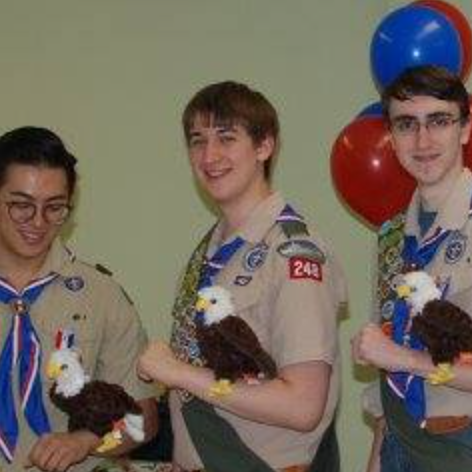
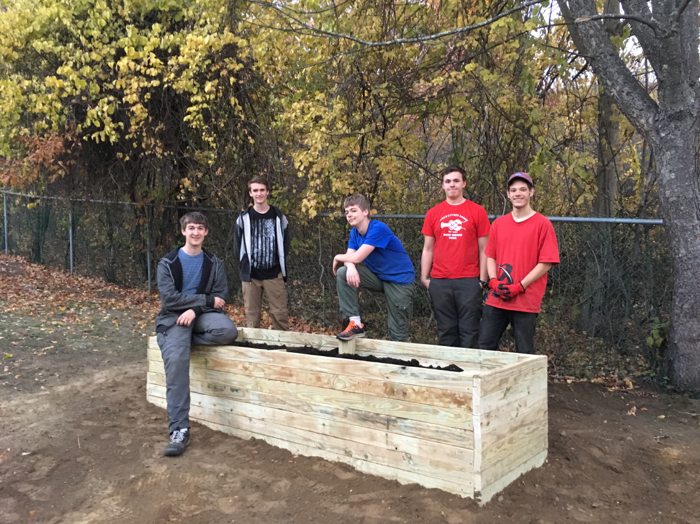

Pictured: The Eagle Scout Patch.
The Boy Scouts of America (BSA) is a national youth scouting organization which teaches youth aged 11 through 18 outdoorsmanship, leadership, and life skills. I joined Waltham Troop 248 as soon as I could. Through scouting, I've met many of by best friends and experienced some of amazing adventures. Scouting is also responsible for my skill as a leader thanks to the BSA's National Youth Leadership Training program and my time as Senior Patrol Leader in 2016. As a youth lead program, the Senior Patrol Leader is responsible for leading all meetings and planing events along with the other patrol leaders.
Myself (center) along with two other scouts shortly after our Eagle Court of Honor. The stuffed eagles are a Troop 248 tradition for new Eagle Scouts.
Over their scouting career, scouts can progress through the program's ranks. This is done by passing requirements and getting merit badges that all teach valuable skills. Eagle Scout is the highest rank achievable, requiring the dedication to learn a wealth of scouting and life skills, complete 21 merit badges, serve in leadership positions, and finally organize and lead a community service project. Since the inception of the BSA, only 4% of scouts have reached Eagle Scout.
Myself (left) posing by the finished raised garden with some of the volunteers who helped build it over the course of two days.
I achieved the rank of Eagle Scout in 2017. Additionally, I earned the Bronze Palm which is awarded for earning extra merit badges and continued leadership beyond becoming an Eagle. My Eagle Scout project involved leading a group of other scouts in the construction of a raised garden for a local senior citizen home. The raised garden made gardening more accessible to the seniors. I collaborated with the City of Waltham to plan the project out, buy materials, design the bed, and finally work with other scouts to do the work.